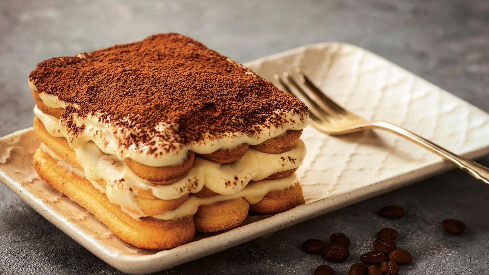

Rustici di wustel

Ingredienti
- wustel
- pasta sfoglia
Procedimento
Prendere un rotolo di pasta sfoglia tagliarla a striscioline, prendere i wustel avvolgere le striscie di pasta sfoglia e tagliare a pezzetini di due centimetri, spennelare con il tuorlo dell'uovo e infornare a 200°C per 15 minuti.
Cotoletta di pollo
Ingredienti
- petto di pollo
- uovo
- pangrattato
- sale
Procedimento
Prendere il petto di pollo a fettine, ogni fettina immergerla nell'uovo battuto col sale e poi passarla nel pangrattato, successivamnete friggerle in olio bollente.
Patatine fritte

Ingredienti
- patate
Procedimento
Prendere le patate pelarle, tagliarle a listarelle sottili e friggerle in olio bollente.
Tiramisù
Ingredienti
- savoiardi
- uova
- mascarpone
- caffè
- zuccchero
- cacao
Procedimento
Prendere una pirofila rettangolare, bagnare i savoiardi nel caffè e disporli sul fondo del tegame; sbattere le uova con lo zucchero, aggiungere il mascarpone e per ultimo aggiungere gli albumi montati a neve, amalgamare il tutto con una frusta; disporre il contentunuto ottenuto sullo strato dei savoiardi e ripetere questo per due volte e infine aggiungere uno strato di cacao e conservare in frigo per 3 ore.
Lasagna al pesto

Ingredienti
- pesto
- pasta lasagna
- mozzarella
- besciamella
Procedimento
Prendere una pirofila rettangolare, mettere un mestolo di besciamella e adagiare due fogli di lasagna, continuare con un mestolo di besciamella sopra la lasagna aggiungere il pesto a fiocchetti, aggiungere la mozzarella e rifare lo stesso procedimento per quattro volte, succesivamente infornare a 200°C per 20 minuti.